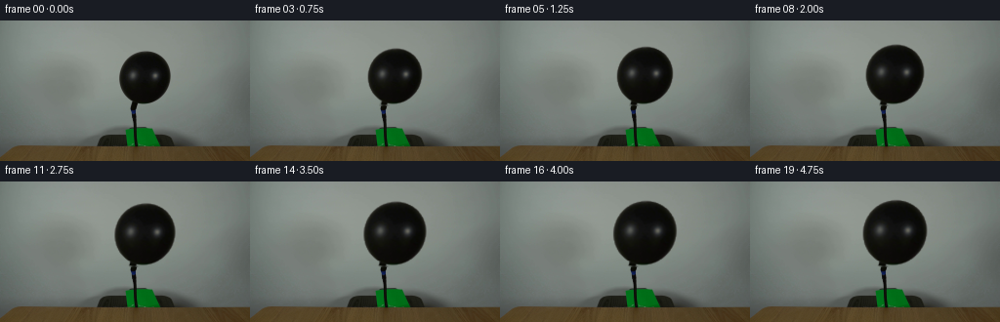
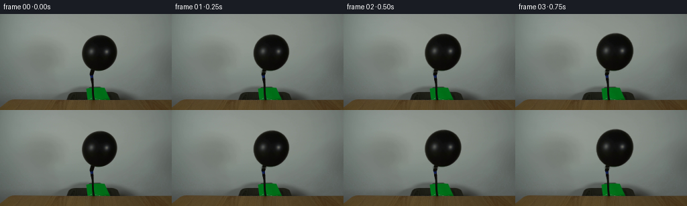

CODING AGENTS AS PIXEL WORLD MODELS
traex/DeepSeek-V4.1-Flash · 0038
点击播放 · 原生 RGB 像素
逐轮保存的候选
回放视频、检查图与代码变化。
每份候选均可单独播放。实际图片检查记录在下方工具轨迹中。
候选 01播放与检查图
点击播放 · 原生 RGB 像素


展开代码变化
--- 上一保存版本
+++ 本次保存版本
@@ -0,0 +1,175 @@
+from pathlib import Path
+
+import cv2
+import numpy as np
+from PIL import Image
+
+import artifact_io
+
+
+CASE_DIR = Path(__file__).resolve().parent
+WIDTH = 256
+HEIGHT = 144
+N_FRAMES = 20
+FPS = 4
+
+
+def _balloon_mask(image: np.ndarray) -> np.ndarray:
+ """Recover the dark balloon silhouette from the smooth studio backdrop."""
+ image_f = image.astype(np.float32)
+ roi = np.zeros((HEIGHT, WIDTH), dtype=np.uint8)
+ roi[27:86, 113:184] = 1
+
+ distance = np.zeros((HEIGHT, WIDTH), dtype=np.float32)
+ for y in range(27, 86):
+ left = np.median(image_f[y, 88:112], axis=0)
+ right = np.median(image_f[y, 182:206], axis=0)
+ expected = 0.5 * (left + right)
+ distance[y] = np.linalg.norm(image_f[y] - expected, axis=1)
+
+ seed = ((distance > 23.0) & (roi > 0)).astype(np.uint8)
+ count, labels, stats, centroids = cv2.connectedComponentsWithStats(seed, 8)
+ candidates = [
+ index
+ for index in range(1, count)
+ if 112 <= centroids[index, 0] <= 184
+ and 27 <= centroids[index, 1] <= 86
+ ]
+ component = max(candidates, key=lambda index: stats[index, cv2.CC_STAT_AREA])
+ silhouette = (labels == component).astype(np.uint8)
+ silhouette = cv2.morphologyEx(
+ silhouette, cv2.MORPH_CLOSE, np.ones((3, 3), dtype=np.uint8)
+ )
+
+ contours, _ = cv2.findContours(
+ silhouette, cv2.RETR_EXTERNAL, cv2.CHAIN_APPROX_SIMPLE
+ )
+ filled = np.zeros_like(silhouette)
+ cv2.drawContours(filled, contours, -1, 1, thickness=cv2.FILLED)
+ filled[:27] = 0
+ filled[86:] = 0
+ filled[:, :113] = 0
+ filled[:, 184:] = 0
+ return filled
+
+
+def _prepare_scene(image: np.ndarray):
+ mask = _balloon_mask(image)
+ # A lightly dilated mask removes the antialiased dark fringe before inpainting.
+ repair = cv2.dilate(mask, np.ones((5, 5), dtype=np.uint8), iterations=1)
+ background = cv2.inpaint(
+ cv2.cvtColor(image, cv2.COLOR_RGB2BGR),
+ repair,
+ 5,
+ cv2.INPAINT_TELEA,
+ )
+ background = cv2.cvtColor(background, cv2.COLOR_BGR2RGB)
+
+ # Supersampled alpha keeps the deforming latex edge smooth at this small size.
+ alpha = cv2.GaussianBlur(mask.astype(np.float32), (0, 0), 0.38)
+ alpha = np.clip((alpha - 0.08) / 0.84, 0.0, 1.0)
+ return mask, alpha, background
+
+
+def _warp_balloon(
+ image: np.ndarray,
+ alpha: np.ndarray,
+ scale_x: float,
+ scale_y: float,
+ scale: int = 4,
+):
+ """Scale the balloon about its fixed neck using inverse coordinate mapping."""
+ anchor_x = 147.8
+ anchor_y = 84.2
+ out_w = WIDTH * scale
+ out_h = HEIGHT * scale
+ yy, xx = np.mgrid[0:out_h, 0:out_w].astype(np.float32)
+ xx = (xx + 0.5) / scale - 0.5
+ yy = (yy + 0.5) / scale - 0.5
+
+ # The tiny asymmetric factor makes the latex swell a little more sideways
+ # than upward, while the hose attachment remains perfectly stationary.
+ src_x = anchor_x + (xx - anchor_x) / scale_x
+ src_y = anchor_y + (yy - anchor_y) / scale_y
+
+ # remap requires actual 32-bit maps; Python float scale factors otherwise
+ # promote the arithmetic to float64.
+ map_x = np.ascontiguousarray(src_x, dtype=np.float32)
+ map_y = np.ascontiguousarray(src_y, dtype=np.float32)
+ warped_rgb = cv2.remap(
+ image,
+ map_x,
+ map_y,
+ interpolation=cv2.INTER_CUBIC,
+ borderMode=cv2.BORDER_REPLICATE,
+ )
+ warped_alpha = cv2.remap(
+ alpha,
+ map_x,
+ map_y,
+ interpolation=cv2.INTER_LINEAR,
+ borderMode=cv2.BORDER_CONSTANT,
+ borderValue=0,
+ )
+
+ # A restrained moving sheen reads as taut, air-filled latex rather than a
+ # uniformly scaled bitmap. It is strongest on the upper-left shoulder.
+ nx = (xx - anchor_x) / max(scale_x * 26.0, 1.0)
+ ny = (yy - (anchor_y - 26.0 * scale_y)) / max(scale_y * 27.0, 1.0)
+ sheen = np.exp(
+ -(
+ ((nx + 0.34) / 0.43) ** 2
+ + ((ny - 0.15) / 0.25) ** 2
+ )
+ )
+ sheen *= warped_alpha * 3.2
+ warped_rgb = np.clip(warped_rgb.astype(np.float32) + sheen[..., None], 0, 255)
+
+ warped_rgb = cv2.resize(
+ warped_rgb, (WIDTH, HEIGHT), interpolation=cv2.INTER_AREA
+ )
+ warped_alpha = cv2.resize(
+ warped_alpha, (WIDTH, HEIGHT), interpolation=cv2.INTER_AREA
+ )
+ return warped_rgb, np.clip(warped_alpha, 0.0, 1.0)
+
+
+def generate_frames():
+ source_path = CASE_DIR / "first_frame.png"
+ first = np.asarray(Image.open(source_path).convert("RGB"), dtype=np.uint8)
+ if first.shape != (HEIGHT, WIDTH, 3):
+ raise ValueError(f"Unexpected first-frame shape: {first.shape}")
+
+ _, alpha, background = _prepare_scene(first)
+ frames = np.empty((N_FRAMES, HEIGHT, WIDTH, 3), dtype=np.uint8)
+ frames[0] = first
+
+ for frame_index in range(1, N_FRAMES):
+ time = frame_index / (N_FRAMES - 1)
+ growth = 1.0 - (1.0 - time) ** 1.5
+
+ # Small pressure pulses ride on the steady inflation. Their phase is
+ # intentionally gentle so the locked-off shot stays physically calm.
+ pulse = 0.0035 * np.sin(2.0 * np.pi * (2.05 * time - 0.12))
+ pulse *= min(1.0, time * 5.0)
+ scale_x = 1.0 + 0.255 * growth + pulse
+ scale_y = 1.0 + 0.235 * growth + 0.62 * pulse
+
+ warped_rgb, warped_alpha = _warp_balloon(
+ first, alpha, scale_x, scale_y
+ )
+ alpha_3 = warped_alpha[..., None]
+ frame = background.astype(np.float32) * (1.0 - alpha_3)
+ frame += warped_rgb * alpha_3
+ frames[frame_index] = np.clip(np.rint(frame), 0, 255).astype(np.uint8)
+
+ return frames
+
+
+def main():
+ frames = generate_frames()
+ artifact_io.save(frames, CASE_DIR)
+
+
+if __name__ == "__main__":
+ main()
可观测工具轨迹
实际执行的命令与返回图片。
命令 1exit 0
/bin/bash -c "pwd && rg --files -g '"'!*.mp4'"' -g '"'!*.webm'"' | sed -n '1,200p'"
命令 2exit 0
/bin/bash -c 'cat prompt.txt'
命令 3exit 0
/bin/bash -c 'cat GENERATION_RULES.md'
命令 4exit 127
/bin/bash -c 'ls -lah && file first_frame.png && (command -v ffmpeg || true) && (command -v python3 || true)'
命令 5exit 0
/bin/bash -c "sed -n '1,240p' artifact_io.py"
命令 6exit 0
/bin/bash -c "sed -n '1,260p' player_template.html"
命令 7exit 0
/bin/bash -c "python3 - <<'PY'
from PIL import Image
import numpy as np
im=Image.open('first_frame.png')
print(im.mode, im.size, im.info)
a=np.asarray(im.convert('RGB'))
print(a.shape,a.dtype,a.min(),a.max(),a.mean(axis=(0,1)))
# unique colors and frequency
u,c=np.unique(a.reshape(-1,3),axis=0,return_counts=True)
idx=np.argsort(c)[-30:][::-1]
for i in idx:
print(tuple(map(int,u[i])), int(c[i]))
PY"命令 8exit 0
/bin/bash -c "python3 - <<'PY'
from PIL import Image
import numpy as np
im=np.asarray(Image.open('first_frame.png').convert('RGB'))
# 16x9 block avg in ANSI? produce brightness chars and dominant hue labels
for gy in range(0,144,6):
line=''
for gx in range(0,256,6):
p=im[gy:gy+6,gx:gx+6].reshape(-1,3).mean(0)
r,g,b=p
y=.2126*r+.7152*g+.0722*b
chars=' .:-=+*#%@'
line+=chars[min(9,int(y/256*10))]
print(line)
print('HSV labels per 16x16 block')
for gy in range(0,144,16):
line=''
for gx in range(0,256,16):
p=im[gy:gy+16,gx:gx+16].reshape(-1,3).mean(0)
r,g,b=p/255
mx=max(p); mn=min(p)
if mx-mn<10: c='K' if mx<60 else 'W' if mx>160 else 'G'
elif r>=g and r>=b: c='R'
elif g>=r and g>=b: c='G'
else: c='B'
line+=c
print(line)
PY"命令 9exit 0
/bin/bash -c "python3 - <<'PY'
from PIL import Image
import numpy as np
from collections import deque
im=np.asarray(Image.open('first_frame.png').convert('RGB')).astype(np.int16)
# print components for darkness threshold
lum=(.2126*im[:,:,0]+.7152*im[:,:,1]+.0722*im[:,:,2])
for th in [20,30,40,50,60,70,80,90,100]:
m=lum<th
# components
seen=np.zeros(m.shape,bool); comps=[]
for y,x in zip(*np.where(m)):
if seen[y,x]:continue
q=[(y,x)];seen[y,x]=1; pts=[]
while q:
yy,xx=q.pop();pts.append((yy,xx))
for dy,dx in ((1,0),(-1,0),(0,1),(0,-1)):
y2,x2=yy+dy,xx+dx
if 0<=y2<144 and 0<=x2<256 and m[y2,x2] and not seen[y2,x2]:
seen[y2,x2]=1;q.append((y2,x2))
if len(pts)>=20:
ys=[p[0] for p in pts];xs=[p[1] for p in pts]
comps.append((len(pts),(min(xs),min(ys),max(xs),max(ys))))
comps.sort(reverse=True)
print('th',th,'count',m.sum(),'components',comps[:8])
# row ranges at dark thresholds
for th in [40,60,80]:
print('threshold',th)
for y in range(0,144,4):
xs=np.where(lum[y]<th)[0]
if len(xs): print(f'{y:3d}: {xs.min():3d}-{xs.max():3d} n={len(xs):3d}')
PY"命令 10exit 0
/bin/bash -c "python3 - <<'PY'
from PIL import Image
import numpy as np
im=np.asarray(Image.open('first_frame.png').convert('RGB'))
pts=[(0,0),(128,0),(255,0),(0,32),(128,32),(255,32),(0,64),(128,64),(255,64),(0,96),(128,96),(255,96),(0,112),(128,112),(255,112),(0,120),(100,120),(148,120),(200,120),(0,128),(50,128),(128,128),(200,128),(255,128),(0,143),(128,143),(255,143)]
for x,y in pts: print((x,y),tuple(im[y,x]))
print('rows avg/min/max')
for y in [0,10,20,30,31,32,40,50,60,70,80,88,90,100,110,116,118,120,124,127,128,130,132,136,140,143]:
row=im[y].astype(float)
print(y, tuple(np.round(row.mean(0)).astype(int)), tuple(row.min(0).astype(int)), tuple(row.max(0).astype(int)))
print('balloon central row samples y=60')
for x in range(115,182,3): print(x,tuple(im[60,x]))
PY"命令 11exit 0
/bin/bash -c "python3 - <<'PY'
from PIL import Image
import numpy as np
im=np.asarray(Image.open('first_frame.png').convert('RGB'))
# region map using color classes: dark balloon/hose, green, table, bright
for y in range(24,132,2):
s=''
for x in range(92,196,2):
r,g,b=im[y:y+2,x:x+2].reshape(-1,3).mean(0)
if max(r,g,b)<55: c='#'
elif g-r>15 and g-b>5: c='g'
elif r>g+10 and g>b+10: c='w'
elif max(r,g,b)>125: c='+'
elif max(r,g,b)<80: c='.'
else: c=' '
s+=c
print(f'{y:3d} {s}')
PY"命令 12exit 0
/bin/bash -c "python3 - <<'PY'
from PIL import Image
import numpy as np
im=np.asarray(Image.open('first_frame.png').convert('RGB')).astype(float)
# color distribution within balloon ellipse and selected shapes
for name,ys,xs in [('balloon',slice(32,84),slice(123,174)),('hose',slice(84,119),slice(134,141)),('table',slice(130,144),slice(0,256)),('bg',slice(0,30),slice(0,256))]:
a=im[ys,xs].reshape(-1,3)
print(name,'mean',a.mean(0),'std',a.std(0),'q',np.percentile(a,[5,25,50,75,95],axis=0))
# show detailed pixel matrix around balloon for y=52..62 x=128..170 luminance numeric coarse
for y in [32,36,40,44,48,52,56,60,64,68,72,76,80,84,88,92,96,100,104,108,112,116,120,124,128]:
# edge positions threshold dark
lum=.2126*im[y,:,0]+.7152*im[y,:,1]+.0722*im[y,:,2]
xs=np.where(lum<70)[0]
# contiguous segments in central 100..190
seg=[]
for x in xs:
if not seg or x>seg[-1][-1]+1:seg.append([x])
else:seg[-1].append(x)
print(y,[(s[0],s[-1]) for s in seg if s[-1]>=90 and s[0]<=200])
PY"命令 13exit 0
/bin/bash -c "python3 - <<'PY'
from PIL import Image
import numpy as np
im=np.asarray(Image.open('first_frame.png').convert('RGB')).astype(int)
# crop map pixel grid of 4x4 avg, region x90-205 y20-135 using grayscale chars, ensure aspect
for y in range(20,136,4):
s=''
for x in range(90,206,4):
p=im[y:y+4,x:x+4].reshape(-1,3).mean(0)
l=.2126*p[0]+.7152*p[1]+.0722*p[2]
# dark / bg / green / wood
if l<30:c='@'
elif l<60:c='#'
elif p[1]-p[0]>15:c='G'
elif p[0]-p[2]>20 and p[0]>p[1]+8:c='W'
elif l<90:c='.'
elif l<120:c='o'
else:c=' '
s+=c
print(f'{y:3d} {s}')
PY"命令 14exit 0
/bin/bash -c "python3 - <<'PY' mods=['numpy','PIL','scipy','cv2','imageio','skimage'] for m in mods: try: x=__import__(m); print(m,'OK',getattr(x,'__version__','')) except Exception as e: print(m,'NO',type(e).__name__,e) PY"
命令 15exit 0
/bin/bash -c "python3 - <<'PY'
import cv2, numpy as np
from PIL import Image
im=np.asarray(Image.open('first_frame.png').convert('RGB'))
lum=.2126*im[:,:,0]+.7152*im[:,:,1]+.0722*im[:,:,2]
reg=np.zeros(lum.shape,np.uint8); reg[28:89,116:181]=1
for th in [75,85,95,105]:
m=((lum<th)&(reg>0)).astype(np.uint8)
n,lab,stats,cents=cv2.connectedComponentsWithStats(m,8)
# component containing x137 y60
i=lab[60,137]
cm=(lab==i).astype(np.uint8)
ys,xs=np.where(cm)
print('th',th,'n',n,'size',cm.sum(),'bbox',xs.min(),ys.min(),xs.max(),ys.max())
# per row extents
print([(y,int(np.where(cm[y])[0].min()),int(np.where(cm[y])[0].max())) for y in range(32,88,4) if cm[y].any()])
PY"命令 16exit 0
/bin/bash -c "python3 - <<'PY'
from PIL import Image
import numpy as np
im=np.asarray(Image.open('first_frame.png').convert('RGB'))
# print table of RGB values at key points around balloon, edges, highlights
for y in [32,34,36,40,44,48,52,56,60,64,68,72,76,80,84,88,96,104,112,116,120,124,128]:
xs=[118,120,122,124,126,128,130,132,134,136,138,140,142,144,146,148,150,152,154,156,158,160,162,164,166,168,170,172,174,176]
vals=[]
for x in xs:
p=im[y,x]; l=round(.2126*p[0]+.7152*p[1]+.0722*p[2])
vals.append(f'{l:3d}')
print(f'{y:3d}', ''.join(vals))
PY"命令 17exit 0
/bin/bash -c "python3 - <<'PY'
from PIL import Image
import numpy as np
im=np.asarray(Image.open('first_frame.png').convert('RGB')).astype(float)
# use threshold segmentation to save visual masks and enlarged nearest images for analysis? allowed intermediate in .tmp
from pathlib import Path
Path('.tmp').mkdir(exist_ok=True)
# calculate balloon boundary width by row threshold <75
lum=.2126*im[:,:,0]+.7152*im[:,:,1]+.0722*im[:,:,2]
for th in [50,75,95]:
print('threshold',th)
for y in range(30,90):
xs=np.where(lum[y,115:181]<th)[0]+115
if len(xs):
# largest contiguous central segment
ss=[]
for x in xs:
if not ss or x>ss[-1][-1]+1:ss.append([x])
else:ss[-1].append(x)
s=max(ss,key=len)
print(y,s[0],s[-1],len(s))
PY"命令 18exit 0
/bin/bash -c "python3 - <<'PY'
from PIL import Image
import numpy as np
im=np.asarray(Image.open('first_frame.png').convert('RGB')).astype(float)
# luminance and gradients around hose and balloon neck
for y in range(82,122,2):
print('y',y,' '.join(f'{x}:{im[y,x].mean():.0f}' for x in range(132,145)))
# rgb values of hose center x=138 and adjacent
print('hose rgb')
for y in range(84,121,4): print(y, [tuple(im[y,x].astype(int)) for x in range(134,142)])
PY"命令 19exit 0
/bin/bash -c "python3 - <<'PY'
from PIL import Image
import numpy as np, cv2
im=np.asarray(Image.open('first_frame.png').convert('RGB'))
lum=.2126*im[:,:,0]+.7152*im[:,:,1]+.0722*im[:,:,2]
reg=np.zeros(lum.shape,np.uint8);reg[25:90,112:184]=1
m=((lum<118)&(reg>0)).astype(np.uint8)
# fill and component
n,lab,stats,cents=cv2.connectedComponentsWithStats(m,8)
i=lab[60,137]; cm=(lab==i).astype(np.uint8)
cm[85:]=0
# close, fill contour
cm=cv2.morphologyEx(cm,cv2.MORPH_CLOSE,np.ones((3,3),np.uint8))
# fill holes via contour
cnts,_=cv2.findContours(cm,cv2.RETR_EXTERNAL,cv2.CHAIN_APPROX_SIMPLE)
filled=np.zeros_like(cm); cv2.drawContours(filled,cnts,-1,1,-1)
print('filled area',filled.sum(),'bbox')
ys,xs=np.where(filled);print(xs.min(),ys.min(),xs.max(),ys.max())
for y in range(28,86,2):
s=''
for x in range(112,186,2):
s += '#' if filled[y:y+2,x:x+2].mean()>.5 else ' '
print(f'{y:3d} {s}')
PY"命令 20exit 0
/bin/bash -c "python3 - <<'PY'
from PIL import Image
import numpy as np
im=np.asarray(Image.open('first_frame.png').convert('RGB'))
# print masks as ASCII for y 84-130 x 126-150 at 1 px
for y in range(84,131):
s=''
for x in range(126,151):
r,g,b=im[y,x]
if max(r,g,b)<40:c='#'
elif g-r>20:c='G'
elif int(r)>g+15 and int(g)>b+15:c='W'
elif max(r,g,b)>115:c='.'
else:c=' '
s+=c
print(f'{y:3d} {s}')
PY"命令 21exit 0
/bin/bash -c "python3 - <<'PY'
from PIL import Image
import numpy as np
im=np.asarray(Image.open('first_frame.png').convert('RGB')).astype(int)
for y in range(30,89):
# use color distance to background estimate local x 110-120 and 180-190
p=im[y]
left=p[108:118].mean(0); right=p[180:190].mean(0)
bg=(left+right)/2
dist=np.sqrt(((p-bg)**2).sum(1))
xs=np.where(dist>25)[0]
ss=[]
for x in xs:
if not ss or x>ss[-1][-1]+1:ss.append([x])
else:ss[-1].append(x)
ss=[s for s in ss if s[-1]>=115 and s[0]<=185]
print(y,[(s[0],s[-1]) for s in ss])
PY"命令 22exit 0
/bin/bash -c "python3 - <<'PY'
from PIL import Image
import numpy as np
im=np.asarray(Image.open('first_frame.png').convert('RGB')).astype(float)
# background estimate from same row outside object and smooth interpolation
for y in [31,32,36,40,44,48,52,56,60,64,68,72,76,80,84,88,92,96,100,104,108,112,116,120,124,128]:
left=im[y,90:115].mean(0); right=im[y,182:207].mean(0)
print(y, 'L',np.round(left,1),'R',np.round(right,1),'mid',np.round((left+right)/2,1))
PY"命令 23exit 0
/bin/bash -c "python3 - <<'PY'
from PIL import Image
import numpy as np
im=np.asarray(Image.open('first_frame.png').convert('RGB')).astype(float)
# derive row widths with robust bg subtraction for rows, store contour
lum=.2126*im[:,:,0]+.7152*im[:,:,1]+.0722*im[:,:,2]
for y in range(30,89):
# local background = median of x90:115 and 181:205 per channel? luminance mean
bg=(np.median(lum[y,90:115])+np.median(lum[y,181:206]))/2
xs=np.where(lum[y,115:181] < bg-18)[0]+115
if len(xs):
ss=[]
for x in xs:
if not ss or x>ss[-1][-1]+1:ss.append([x])
else:ss[-1].append(x)
ss=[s for s in ss if len(s)>2]
print(y,round(bg,1),[(s[0],s[-1]) for s in ss])
PY"命令 24exit 0
/bin/bash -c "command -v ffmpeg; command -v ffprobe; python3 - <<'PY'
import cv2
print('cv2 writer mp4',cv2.VideoWriter_fourcc(*'mp4v'))
PY"命令 25exit 0
/bin/bash -c "python3 - <<'PY'
from PIL import Image
import numpy as np, cv2
im=np.asarray(Image.open('first_frame.png').convert('RGB')).astype(np.float32)
h,w=im.shape[:2]
# background expected by interpolating left and right color medians per row
roi=(108,25,190,91)
x0,y0,x1,y1=roi
mask=np.zeros((h,w),np.uint8)
for y in range(y0,y1):
lc=np.median(im[y,90:112],axis=0)
rc=np.median(im[y,182:205],axis=0)
xs=np.arange(x0,x1)
f=(xs-112)/(182-112)
exp=lc[None,:]*(1-f[:,None])+rc[None,:]*f[:,None]
d=np.linalg.norm(im[y,x0:x1]-exp,axis=1)
mask[y,x0:x1]=(d>23).astype(np.uint8)*255
# close/fill central component
mask=cv2.morphologyEx(mask,cv2.MORPH_CLOSE,np.ones((3,3),np.uint8))
n,lab,stats,cents=cv2.connectedComponentsWithStats((mask>0).astype(np.uint8),8)
# choose component center near 148,58
idx=max(range(1,n), key=lambda i: stats[i,cv2.CC_STAT_AREA] if 110<cents[i][0]<190 and 25<cents[i][1]<95 else 0)
m=(lab==idx).astype(np.uint8)
# fill contours
cnts,_=cv2.findContours(m,cv2.RETR_EXTERNAL,cv2.CHAIN_APPROX_SIMPLE)
filled=np.zeros_like(m);cv2.drawContours(filled,cnts,-1,1,-1)
# restrict to y<=84 and central x
filled[:28]=0;filled[85:]=0;filled[:,:108]=0;filled[:,190:]=0
ys,xs=np.where(filled)
print('mask',filled.sum(),xs.min(),ys.min(),xs.max(),ys.max())
for y in range(28,86,2):
s=''
for x in range(108,191,2):
s += '#' if filled[y:y+2,x:x+2].mean()>.5 else ' '
print(f'{y:3d} {s}')
PY"命令 26exit 0
/bin/bash -c "python3 - <<'PY'
from PIL import Image
import numpy as np
im=np.asarray(Image.open('first_frame.png').convert('RGB')).astype(float)
# Map textually using local bg deviation and colors in neighborhood; save a colorized ascii for balloon detail
for y in range(31,85):
s=''
for x in range(120,177):
r,g,b=im[y,x]
l=.2126*r+.7152*g+.0722*b
if l<20:c='@'
elif l<45:c='#'
elif l<80:c='+'
elif l<115:c='.'
else:c=' '
s+=c
print(f'{y:3d} {s}')
PY"命令 27exit 0
/bin/bash -c "python3 - <<'PY'
from PIL import Image
import numpy as np
im=np.asarray(Image.open('first_frame.png').convert('RGB')).astype(float)
# BG interpolate and compute distance map / sample edge colors for balloon
for y in range(31,85):
lc=np.median(im[y,90:112],axis=0); rc=np.median(im[y,182:205],axis=0)
exp=(lc+rc)/2
xs=np.where(np.linalg.norm(im[y]-exp,axis=1)>22)[0]
xs=xs[(xs>=115)&(xs<=185)]
if len(xs): print(y, tuple(exp.astype(int)), xs.min(),xs.max())
PY"命令 28exit 0
/bin/bash -c "python3 - <<'PY'
from PIL import Image
import numpy as np
im=np.asarray(Image.open('first_frame.png').convert('RGB'))
# print RGB values of some background noise and balloon highlight
for y in range(31,85):
row=[]
for x in range(120,177):
p=im[y,x]
l=int(.2126*p[0]+.7152*p[1]+.0722*p[2])
row.append(l)
print(y, min(row), max(row), row[:3],row[54:57])
PY"命令 29exit 0
/bin/bash -c "python3 - <<'PY'
from PIL import Image
import numpy as np
im=np.asarray(Image.open('first_frame.png').convert('RGB')).astype(float)
# fit ellipse to mask boundary using cv2? fit ellipse
import cv2
# create mask via bg dev threshold as above
mask=np.zeros(im.shape[:2],np.uint8)
for y in range(28,85):
lc=np.median(im[y,90:112],axis=0);rc=np.median(im[y,182:205],axis=0)
exp=(lc+rc)/2
d=np.linalg.norm(im[y]-exp,axis=1)
mask[y,(d>23)&(np.arange(256)>=115)&(np.arange(256)<=185)]=1
cnts,_=cv2.findContours(mask,cv2.RETR_EXTERNAL,cv2.CHAIN_APPROX_NONE)
c=max(cnts,key=cv2.contourArea)
print(cv2.fitEllipse(c))
# ellipse formula from mask area bbox center
ys,xs=np.where(mask)
print(xs.mean(),ys.mean(),xs.min(),xs.max(),ys.min(),ys.max(),mask.sum())
PY"命令 30exit 1
/bin/bash -c 'python3 generate.py && ls -lah frames inspection.png transition_check.png pixels.npz index.html'
命令 31exit 1
/bin/bash -c 'python3 generate.py && ls -lah frames inspection.png transition_check.png pixels.npz index.html'
命令 32exit 0
/bin/bash -c "python3 - <<'PY' import numpy as np print(np.__version__) a=np.zeros((2,3),dtype=np.float32);b=np.zeros((2,3),dtype=np.float32) print(a.flags,a.dtype,a.shape) import cv2 img=np.zeros((5,5,3),np.uint8) try: print(cv2.remap(img,a,b,cv2.INTER_LINEAR).shape) except Exception as e: print(repr(e)) PY"
命令 33exit 0
/bin/bash -c "nl -ba generate.py | sed -n '78,115p'; python3 - <<'PY'
from generate import _prepare_scene,_warp_balloon
from PIL import Image
import numpy as np
im=np.asarray(Image.open('first_frame.png').convert('RGB'))
m,a,b=_prepare_scene(im)
print(im.shape, a.shape,a.dtype,b.shape,b.dtype)
# replicate maps
scale=4; outw=256*scale;outh=144*scale
yy,xx=np.mgrid[0:outh,0:outw].astype(np.float32)
print(xx.shape,xx.dtype,xx.flags)
srcx=147.8+(xx-147.8)/1.1
srcy=84.2+(yy-84.2)/1.1
print(srcx.shape,srcx.dtype,srcx.flags)
import cv2
print(cv2.remap(im,np.ascontiguousarray(srcx),np.ascontiguousarray(srcy),cv2.INTER_CUBIC,borderMode=cv2.BORDER_REPLICATE).shape)
PY"命令 34exit 0
/bin/bash -c "python3 - <<'PY'
from generate import _prepare_scene
from PIL import Image
import numpy as np, cv2
im=np.asarray(Image.open('first_frame.png').convert('RGB'))
m,a,b=_prepare_scene(im)
for t in [1/19,2/19,18/19]:
g=1-(1-t)**1.5;p=.0035*np.sin(2*np.pi*(2.05*t-.12))*min(1,t*5)
sx=1+.255*g+p;sy=1+.235*g+.62*p
print(t,sx,sy,type(sx))
scale=4; outw=1024;outh=576
yy,xx=np.mgrid[0:outh,0:outw].astype(np.float32)
xx=(xx+.5)/scale-.5;yy=(yy+.5)/scale-.5
srcx=147.8+(xx-147.8)/sx;srcy=84.2+(yy-84.2)/sy
print(srcx.dtype,srcy.dtype,srcx.shape,srcy.shape)
try:
z=cv2.remap(im,np.ascontiguousarray(srcx),np.ascontiguousarray(srcy),interpolation=cv2.INTER_CUBIC,borderMode=cv2.BORDER_REPLICATE)
print('ok',z.shape)
except Exception as e:print('err',e)
PY"命令 35exit 0
/bin/bash -c 'python3 generate.py && ls -lah frames inspection.png transition_check.png pixels.npz index.html'
命令 36exit 0
/bin/bash -c "python3 - <<'PY'
from PIL import Image
import numpy as np
src=np.asarray(Image.open('first_frame.png').convert('RGB'))
frames=np.stack([np.asarray(Image.open(f'frames/{i:02d}.png').convert('RGB')) for i in range(20)])
print('frame0 identical:',np.array_equal(src,frames[0]))
for i in range(1,20):
d=np.abs(frames[i].astype(int)-frames[i-1].astype(int))
print(i, 'changed',np.any(d>0,axis=2).sum(),'mean',d.mean(),'max',d.max(),'diff_from0_bbox',end=' ')
dd=np.any(np.abs(frames[i].astype(int)-src.astype(int))>1,axis=2)
ys,xs=np.where(dd)
print((xs.min(),ys.min(),xs.max(),ys.max()) if len(xs) else None)
# ascii of luminance for frames 0,5,10,15,19 central crop, coarse 2x2 blocks
for fi in [0,5,10,15,19]:
im=frames[fi]
print('\\nFRAME',fi)
for y in range(24,90,2):
s=''
for x in range(108,190,2):
p=im[y:y+2,x:x+2].reshape(-1,3).mean(0)
l=.2126*p[0]+.7152*p[1]+.0722*p[2]
if l<25:c='@'
elif l<60:c='#'
elif l<100:c='+'
elif l<125:c='.'
else:c=' '
s+=c
print(f'{y:3d} {s}')
PY"命令 37exit 0
/bin/bash -c "python3 - <<'PY'
from PIL import Image
import numpy as np
im=np.asarray(Image.open('inspection.png'))
print(im.shape)
PY"命令 38exit 0
/bin/bash -c "python3 - <<'PY'
from PIL import Image
import numpy as np
im=np.asarray(Image.open('first_frame.png').convert('RGB')).astype(float)
# print RGB/gray grid around balloon at 4x4 blocks, including labels from background and compare expected bg
for y in range(28,88,4):
s=''
for x in range(112,188,4):
p=im[y:y+4,x:x+4].reshape(-1,3).mean(0); l=.2126*p[0]+.7152*p[1]+.0722*p[2]
if l<20:c='@'
elif l<50:c='#'
elif l<90:c='+'
elif l<115:c='.'
else:c=' '
s+=c
print(f'{y:3d} {s}')
PY"命令 39exit 0
/bin/bash -c "python3 - <<'PY'
from PIL import Image
import numpy as np
im=np.asarray(Image.open('first_frame.png').convert('RGB')).astype(float)
# save enlarged crop using nearest for possible human review, plus derived masks as files
crop=Image.fromarray(im.astype(np.uint8)).crop((110,24,188,92)).resize((624,544),Image.Resampling.NEAREST)
crop.save('.tmp/balloon_crop.png')
print('.tmp/balloon_crop.png')
PY"命令 40exit 0
/bin/bash -c "python3 - <<'PY'
from PIL import Image
import numpy as np
im=np.asarray(Image.open('first_frame.png').convert('RGB')).astype(float)
# Determine candidate object components including neck using deviation map; print rows 31-128 and all segments
for y in range(28,132):
lc=np.median(im[y,70:110],axis=0); rc=np.median(im[y,182:220],axis=0)
exp=(lc+rc)/2
d=np.linalg.norm(im[y]-exp,axis=1)
xs=np.where(d>25)[0]
ss=[]
for x in xs:
if not ss or x>ss[-1][-1]+1:ss.append([x])
else:ss[-1].append(x)
ss=[s for s in ss if len(s)>=2 and s[-1]>=110 and s[0]<=200]
if y%2==0: print(y,[(s[0],s[-1]) for s in ss])
PY"命令 41exit 0
/bin/bash -c "python3 - <<'PY'
from PIL import Image
import numpy as np
im=np.asarray(Image.open('first_frame.png').convert('RGB')).astype(float)
# check noise frames difference? only one image. Analyze contour center/width by row
for y in range(31,85):
lc=np.median(im[y,88:112],axis=0);rc=np.median(im[y,182:206],axis=0);exp=(lc+rc)/2
d=np.linalg.norm(im[y]-exp,axis=1)
xs=np.where((d>23)&(np.arange(256)>=115)&(np.arange(256)<=185))[0]
if len(xs):
print(y,xs.min(),xs.max(),(xs.min()+xs.max())/2,xs.max()-xs.min()+1)
PY"命令 42exit 0
/bin/bash -c "python3 - <<'PY'
from PIL import Image
import numpy as np
im=np.asarray(Image.open('first_frame.png').convert('RGB')).astype(float)
# print exact colors on a 2px grid inside representative areas
for y in range(32,86,2):
s=''
for x in range(120,177,2):
p=im[y:y+2,x:x+2].reshape(-1,3).mean(0)
l=.2126*p[0]+.7152*p[1]+.0722*p[2]
if l<16:c='A'
elif l<24:c='B'
elif l<35:c='C'
elif l<55:c='D'
elif l<80:c='E'
elif l<110:c='F'
elif l<130:c='G'
else:c=' '
s+=c
print(f'{y:3d} {s}')
PY"命令 43exit 0
/bin/bash -c "python3 - <<'PY'
from PIL import Image
import numpy as np
im=np.asarray(Image.open('first_frame.png').convert('RGB')).astype(float)
# estimate exact interior shading patterns at x offsets relative center and y relative center
# Print average colors normalized by y; identify highlight clusters
for y in [32,36,40,44,48,52,56,60,64,68,72,76,80,84]:
p=im[y]
print('y',y,'max',p[120:177].max(0),'mean',p[125:171].mean(0))
# list top 40 brightest interior pixels
ys,xs=np.mgrid[31:85,122:175]
a=im[31:85,122:175]
lum=.2126*a[:,:,0]+.7152*a[:,:,1]+.0722*a[:,:,2]
idx=np.dstack(np.unravel_index(np.argsort(lum.ravel())[-30:],lum.shape))[0]
for yy,xx in idx[::-1]: print(31+yy,122+xx,round(lum[yy,xx],1),tuple(im[31+yy,122+xx].astype(int)))
PY"保存候选 1 份；完成命令 43 次；可验证图片返回 0 张。原始 API 响应与完整日志保留在本地。